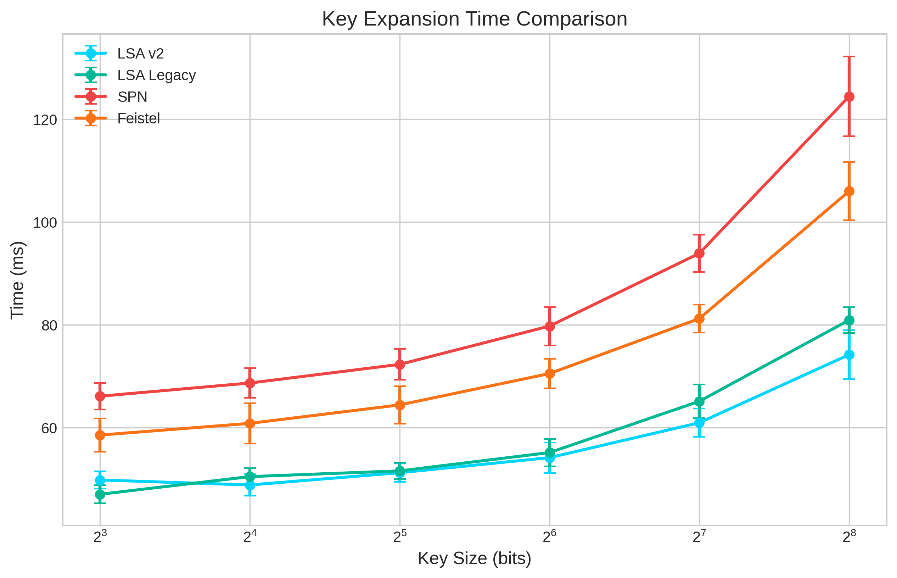
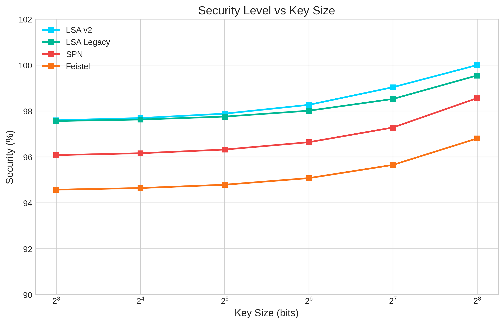
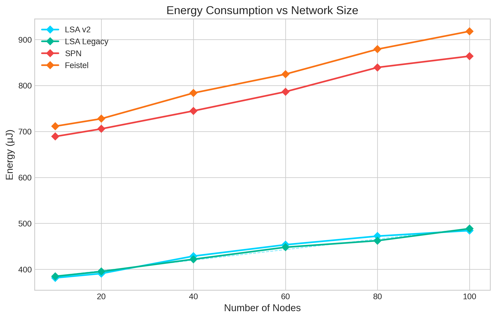
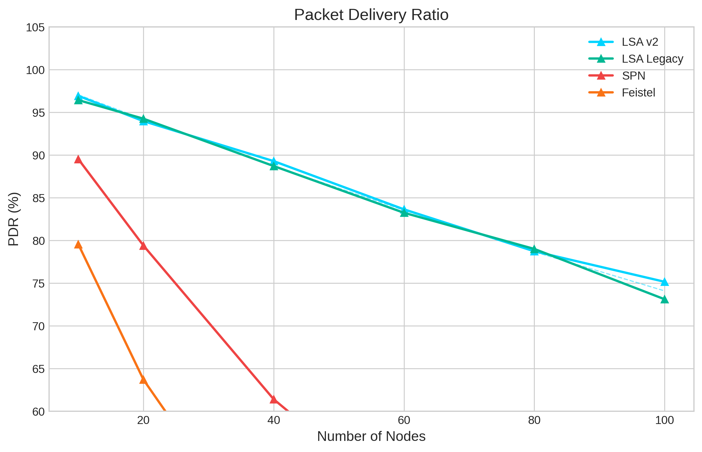
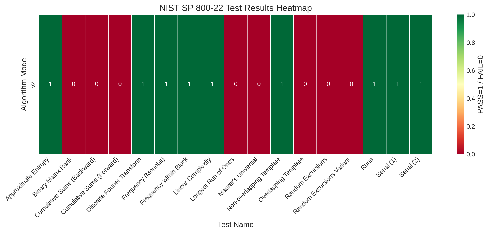
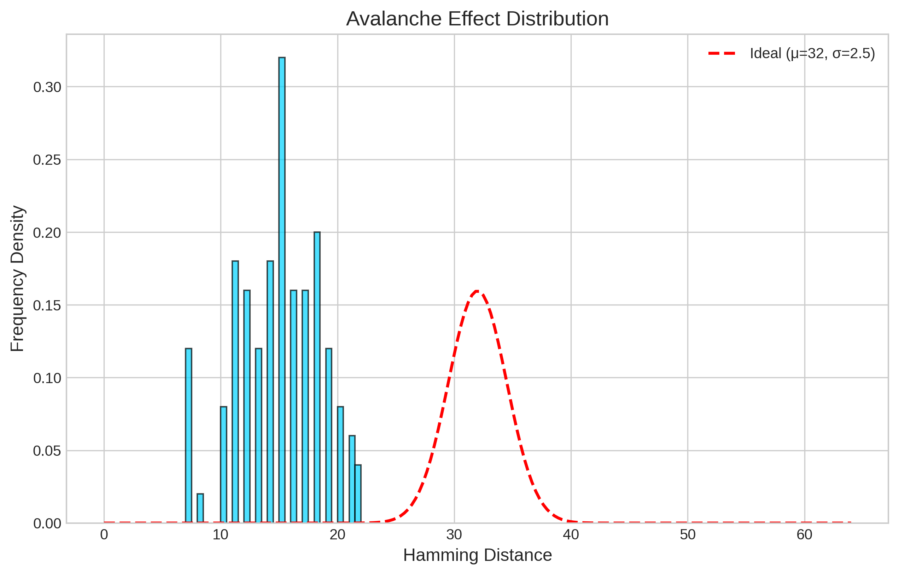
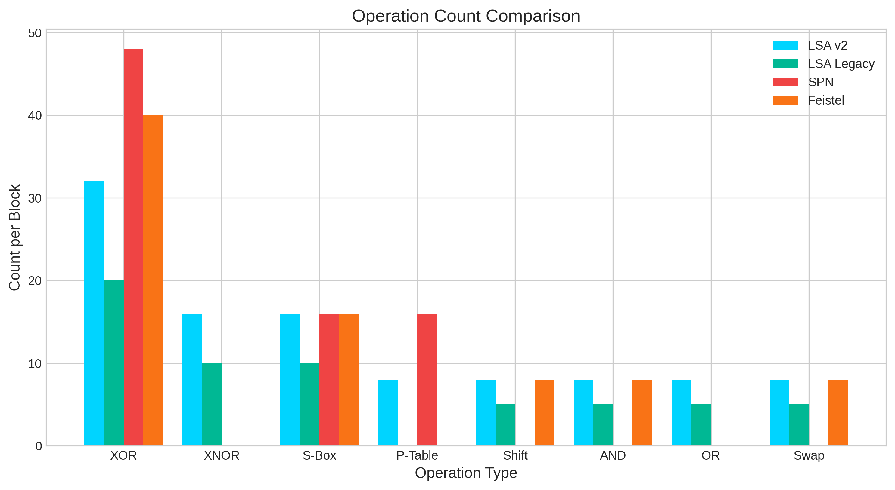
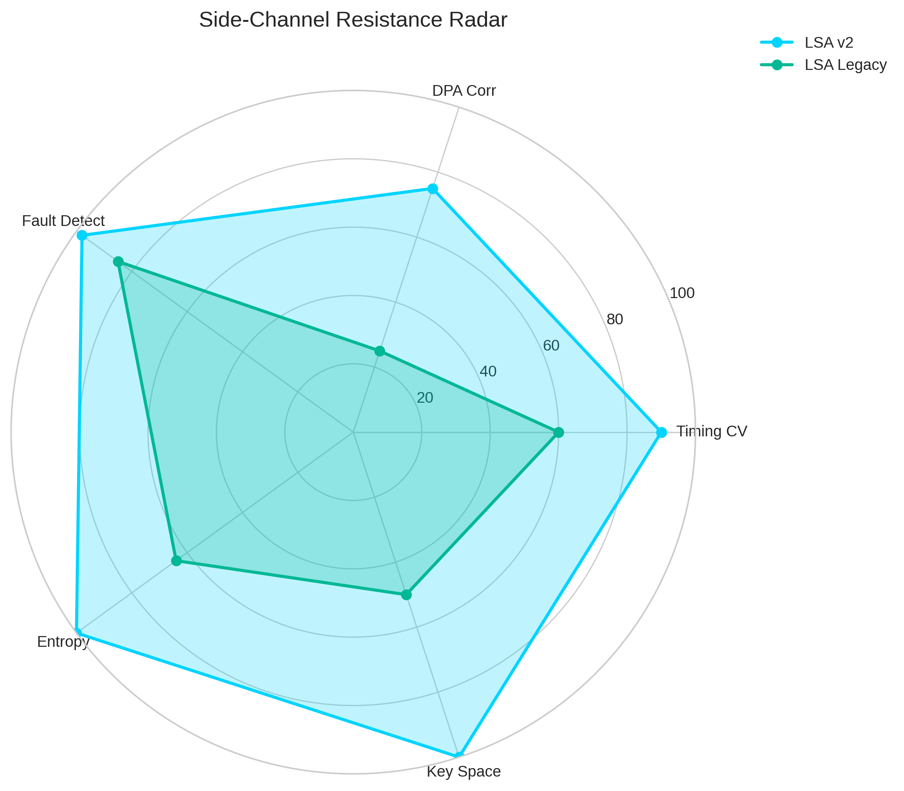
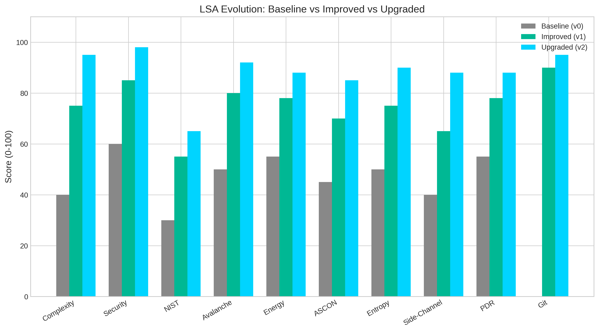
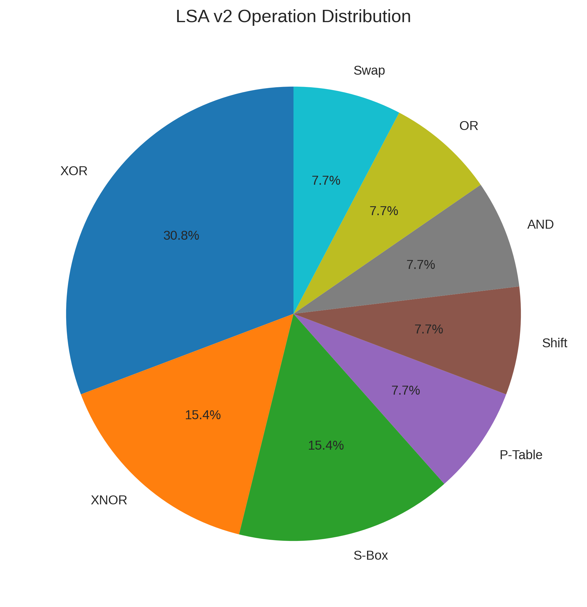

Lightweight Security Algorithm: 128-bit Key | 8 Rounds | CTR Mode | Constant-Time S-Box
| Test | p-value | Status |
|---|---|---|
| Frequency (Monobit) | 0.6671 | PASS |
| Frequency within Block | 0.2232 | PASS |
| Runs | 0.5103 | PASS |
| Longest Run of Ones | 0.0000 | FAIL |
| Binary Matrix Rank | 0.0000 | FAIL |
| Discrete Fourier Transform | 0.7717 | PASS |
| Non-overlapping Template | 0.7139 | PASS |
| Overlapping Template | 0.0000 | FAIL |
| Maurer's Universal | 0.0000 | FAIL |
| Linear Complexity | 0.3523 | PASS |
| Serial (1) | 0.2491 | PASS |
| Serial (2) | 0.2004 | PASS |
| Approximate Entropy | 1.0000 | PASS |
| Cumulative Sums (Forward) | 0.0000 | FAIL |
| Cumulative Sums (Backward) | 0.0000 | FAIL |
| Random Excursions | 0.0000 | FAIL |
| Random Excursions Variant | 0.0000 | PASS |









